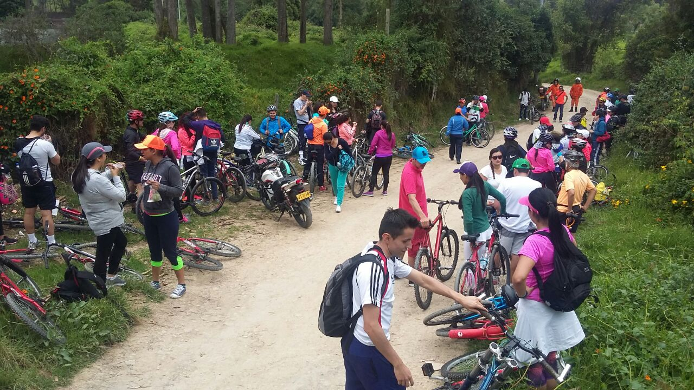

Gastronomía de Paipa: Sabores Auténticos de Boyacá
La gastronomía de Paipa es un reflejo del sabor y la tradición de Boyacá. Cada plato cuenta una historia, combinando ingredientes frescos y recetas que han pasado de generación en generación.

Además de estos platos tradicionales, Paipa ofrece una rica variedad de sabores que reflejan la diversidad de su región. La gastronomía local también incluye la famosa Arepa de choclo, un manjar hecho a base de maíz tierno que se acompaña perfectamente con queso fresco o crema de leche. Los turistas pueden disfrutar de una oferta gastronómica que abarca desde platos sencillos hasta opciones gourmet, siempre con un toque único que combina ingredientes locales y frescos, ideales para todos los gustos
Platos típicos para probar
Amasijos (mojabanas, pan de yuca, garullas): Sabrosos panes y bollos hechos con queso, yuca y maíz, ideales para acompañar cualquier comida o disfrutar como merienda.
Queso Paipa: El queso típico de la región, de textura suave y sabor único, que complementa perfectamente cualquier plato tradicional boyacense.
Cazuela Paipana: Una deliciosa changua (sopa de leche con huevo) acompañada de amasijos como mojabanas, pan de yuca y garullas, ideal para comenzar el día con un sabor auténtico de la región.

La cocina de Paipa no solo satisface el paladar, sino que también es una ventana a la cultura y el espíritu del pueblo boyacense. En sus mercados, restaurantes y fondas, es posible encontrar un ambiente acogedor donde cada plato se sirve con una sonrisa y el deseo de compartir las tradiciones que han dado vida a estas recetas. Sin duda, la gastronomía de Paipa es una invitación a explorar los sabores autóctonos de Boyacá y a disfrutar de una experiencia culinaria que nunca olvidarás.
Descubre la tradición en cada bocado y vive una experiencia culinaria única en Paipa.
Carlos
Qué delicioso suena todo! Nunca he probado la cazuela paipana, pero me encantaría. ¿La changua que mencionan es similar a la changua que se consume en otras partes de Boyacá?
Reply
Mariana
El queso Paipa es mi favorito, y la descripción de la cazuela me hizo salivar. ¿Dónde puedo encontrar estos platos típicos en la ciudad?
Reply
Admin
¡Hola, Carlos!,La changua paipana es muy similar a la changua tradicional, pero tiene su toque especial al combinarla con amasijos como mojabanas, pan de yuca y garullas, lo que la hace aún más reconfortante. Es una opción perfecta para disfrutar en las mañanas. ¡Te animamos a probarla en tu próxima visita!
Reply
Admin
¡Hola, Mariana!, El queso Paipa es, sin duda, uno de los mejores de la región. Para disfrutar de estos platos típicos, te recomendamos visitar algunos de los restaurantes y fondas locales que ofrecen menús tradicionales. Puedes encontrar opciones deliciosas en el centro de Paipa, como en el restaurante “La Casona” o en “El Sabor Boyacense”. ¡Seguro que no te decepcionarán!
Reply
Lucia
Siempre he oído hablar de los amasijos de Boyacá, pero no sabía que en Paipa los preparan de manera tan especial. ¿Los amasijos son fáciles de hacer en casa?
Reply
Admin
¡Hola, Lucía! Los amasijos como las mojabanas y el pan de yuca son relativamente fáciles de hacer en casa, solo necesitas los ingredientes correctos: queso fresco, yuca o maíz, y un poco de paciencia. Si te animas a prepararlos, te sugerimos buscar recetas locales para mantener ese sabor auténtico. ¡Te aseguramos que el esfuerzo vale la pena!
Reply